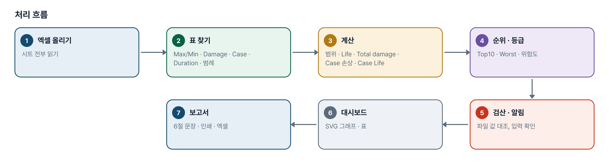
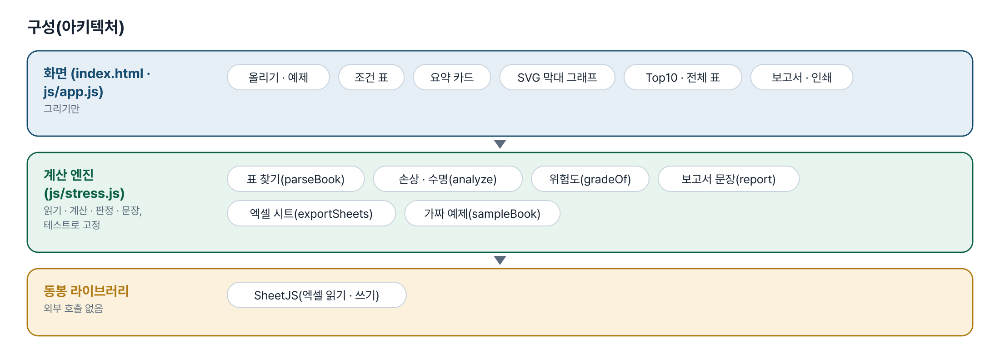
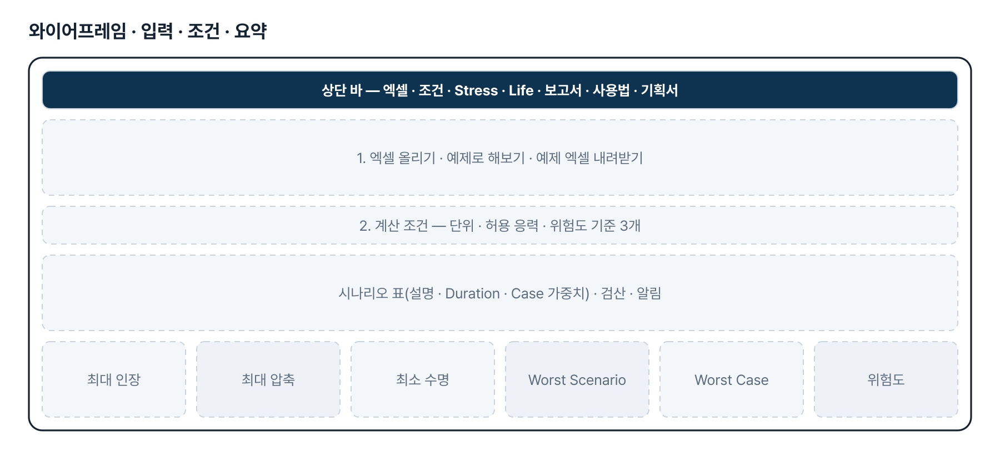
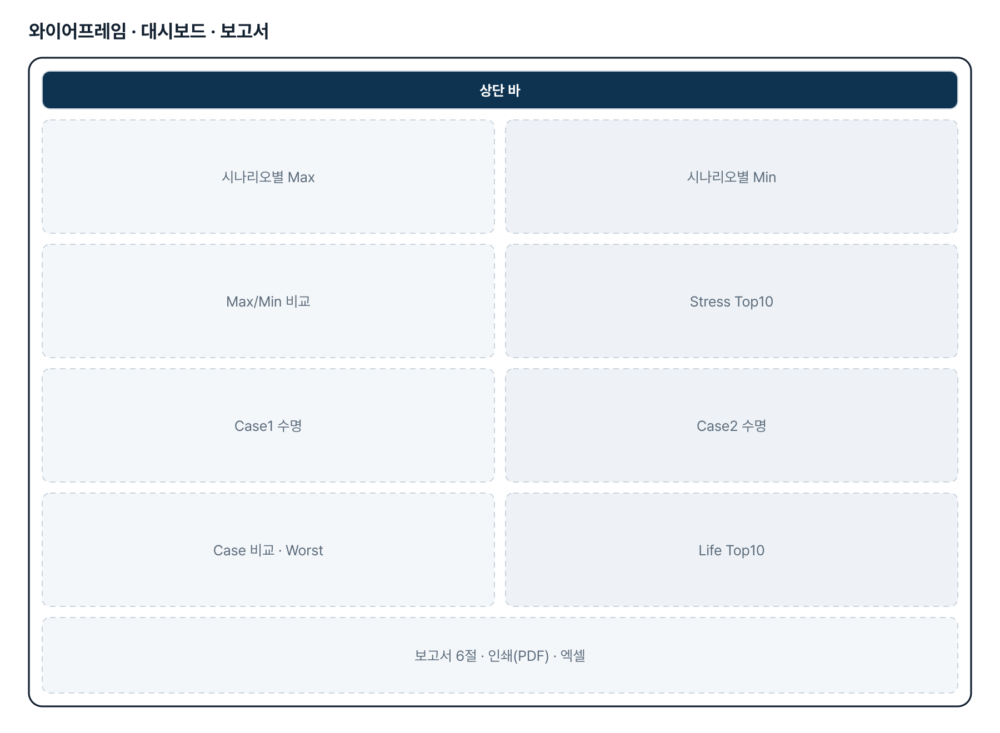
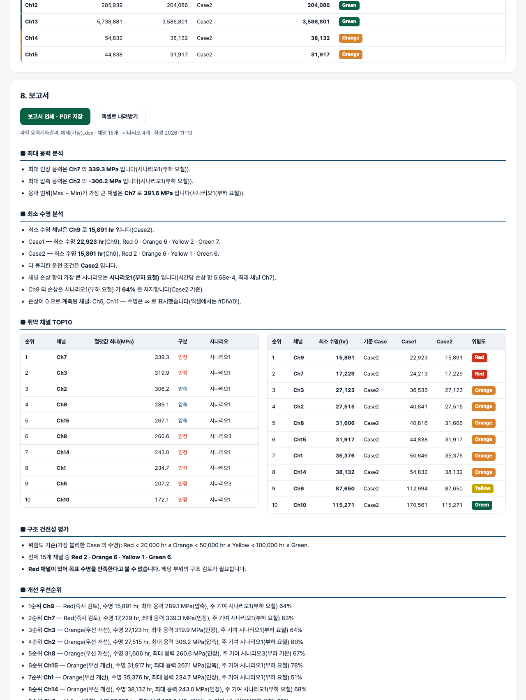

기획서 내려받기
파이프라인 · 아키텍처 · 와이어프레임 · 개발일지가 들어간 워드 문서입니다. 버전마다 따로 남깁니다.
| 버전 | 날짜 | 바뀐 점 | 파일 |
|---|---|---|---|
| v1.1 | 2026-11-13 | 기획자 추가 요청(패들릿 2026-11-12 PPT 3쪽) 반영 / Stress Dashboard — 시나리오 Show/Hide, 한 그래프에 겹쳐 비교 ↔ 시나리오마다 따로, 창마다 채널 선택 · 한 화면 채널 수 · 쪽 넘기기, 막대 위 값 표시(정수 · 소수점 1 · 2자리), 막대 ↔ 꺾은선, 그래프는 한 줄에 하나씩 크게. Max/Min 비교의 인장 빨강 · 압축 파랑은 유지 / Life Dashboard — Case 별 · 시나리오별 수명 평가, Case/시나리오 Show/Hide, Life 기준 오름 · 내림차순, Worst Channel Top 5 · 10 · 20, 채널 검색, 값 표시, 선형 ↔ 로그 축, 숫자는 300,000 처럼, 막대에 올리면 Channel · Case/Scenario · Life · Damage, 막대를 누르면 Stress Dashboard 가 그 채널만 / Damage Dashboard 신설 — Life 와 같은 보기 조건 / 채널별 표를 응력 · 손상 · 수명 세 표로 나눔 — 시나리오 이름은 한 줄 위, 「최대 범위」 → 「Stress range」, 손상 0 채널은 「Damage 0 (검증 필요)」 | 워드 내려받기 |
| v1.0 | 2026-11-12 | 첫 판 — 엑셀 읽기, Stress · Life 대시보드, 자동 분석, 위험도, 6절 보고서 / Case 가중치 · Duration · 기준 · 허용 응력을 화면에서 바꿔 다시 계산 / 파일의 Case Life 와 재계산 검산, 가중치 머리글 순서 · 범례 중복 알림 / 인쇄(PDF) · 엑셀 4시트, 계산 테스트 48 · 화면 테스트 24 | 워드 내려받기 |
요구사항과 구현
| 기획서 요구 | 구현 |
|---|---|
| Excel 데이터 자동 분석 | SheetJS 로 시트 전부를 읽어 Max · Min 머리줄 표, Damage per hour 표, Case 가중치, Duration time, 시나리오 범례를 내용으로 찾음. 못 찾은 표는 알리고 그 분석만 뺌 |
| Stress Dashboard — Max · Min · 비교 그래프 | 채널 × 시나리오 묶음 막대(SVG) 2종 + 채널별 최대 인장 ~ 최대 압축 범위 막대 |
| 최대 응력 채널 · 최대 압축응력 채널 · Stress Top10 | 채널별 최대 인장 · 최대 압축 · 최대 범위와 시나리오, 절댓값 기준 Top10(인장/압축 구분) |
| Life Dashboard — Case1 · Case2 · 비교 그래프 | Case 별 수명 막대(막대 색 = 위험도, 기준 점선) + Case 묶음 막대. Case 수는 2개로 고정하지 않음 |
| Life Top10 · Worst Channel | 가장 불리한 Case 의 수명이 짧은 순 Top10, Worst Channel 과 그 채널의 시나리오별 손상 기여율 |
| 자동 분석 — Worst Scenario · Worst Case · 위험도 | Worst Scenario = 전 채널 시간당 손상 합 최대, Worst Case = 최소 수명이 가장 짧은 Case, 위험도 = Red/Orange/Yellow/Green |
| 위험도 평가 기준 | 기본 20,000 / 50,000 / 100,000 hr, 화면에서 변경 가능. 손상 0 은 ∞ · Green |
| 최종 보고서 6절 | 최대 응력 분석 · 최소 수명 분석 · 취약 채널 TOP10 · 구조 건전성 평가 · 개선 우선순위 · 종합 결론 — 규칙으로 만든 문장, 중요 수치 굵게, 표 포함 |
| 경영진 보고서 수준 · 그래프 포함 | 인쇄(PDF) 때 입력 · 조건 영역을 숨기고 요약 · 그래프 · 보고서만 2단으로 출력, 엑셀 4시트 내려받기 |
| 엑셀값을 넣으면 실행 · 추가 보완 | 예제 엑셀(입력 양식) 내려받기, Case 가중치 · Duration · 기준 · 허용 응력을 화면에서 바꿔 다시 계산, 파일 값과 재계산 값 검산 |
그림으로 보기





개발일지
2026-11-13 · v1.1 그래프 창 · Damage Dashboard · 표 나눔
- 요청 원문: 패들릿 16 섹션 「추가 변경 요청 내용」 PPT(3쪽, 같은 파일이 두 번 올라와 뒤의 것을 기준으로 함)
- 보기 조건의 순수 함수(fmtLabel · pickChannels · paginate)는 엔진 stress.js 에 두고 테스트로 고정 — 계산 규칙 59
- 그래프 창 세 개(Stress · Life · Damage)가 보기 조건을 따로 가진다. 계산식과 위험도 기준은 v1.0 그대로
- Life 색 기준은 기획서의 Red 20,000 · Orange 50,000 · Yellow 100,000 hr 를 유지(PPT 의 10,000 은 「2. 계산 조건」에서 바꿀 수 있음)
- 화면 테스트 47 통과
2026-11-12 · 첫 판
- 애본님 지시로 한신대 메일(11-09 · 11-12)과 패들릿 프롬프트 확인. 아티팩트 링크는 「페이지를 찾을 수 없음」이라 보지 못함
- 애본님 확인 뒤 메일의 엑셀(392KB)을 받아 구조와 수식만 확인: 시트 2장, Life = 1/Damage, Case 손상 = Σ 손상 × 가중치, Total damage = 손상 × Duration/3600
- 엔진 stress.js → 실제 엑셀로 읽기 · 검산 일치 확인 → 화면 → 테스트
- 실제 엑셀에서 가중치 표 머리글 순서(무부하 기본 · 무부하 요철 · 부하 기본 · 부하 요철)와 시나리오 범례 순서가 다르고 시나리오2 · 4 설명이 같은 것을 발견 → 계산은 엑셀대로, 화면에 알림
- 계산 테스트 48 · 화면 테스트 24 통과, 엔진을 일부러 깨뜨려 실패하는지 확인